A Custom Supertuxkart Server
Table of Contents
Each year, my company is organizing an offsite week in a nice place for all of us to meet, introduce new employees and share a bit of our life. One of the main attractions is a bunch of races on the FOSS game SuperTuxKart, for which I’m quite bad.
This year, I had an idea: instead of trying to host a game on someone’s computer and having trouble with firewall and stuff, what if I prepared a server and literally plug’n’play it during this week?
Install the software
After a little bit of googling, I found a ready to be deployed docker image, and the matching docker-compose file. Awesome! I grabbed a NUC server I had in my closet and started to install everything.
# Clone the project
git clone https://github.com/juanelas/supertuxkart-docker.git
cd supertuxkart-docker
# Edit the compose to match your server needs
vim docker-compose.yml
This is what my docker-compose.yml ended up looking like.
version: "3"
services:
supertuxkart:
build: .
ports:
- "2757:2757"
- "2757:2757/udp"
- "2759:2759"
- "2759:2759/udp"
logging:
driver: "json-file"
options:
max-size: "10M"
max-file: "3"
volumes:
- ./config:/root/.config/supertuxkart/config-0.10
- ./addons:/root/.local/share/supertuxkart/addons
restart: unless-stopped
command: --lan-server=Deferlante_Occitane
So far that was pretty simple. I wanted to have a minimal (none if possible) amount of work and tweaks to make during the live event, so I created a systemd entry for my docker container. I had trouble in the past with the restart: unless-stopped docker-compose thing, so with my new service, I’ll make sure that the server will start no matter what.
sudo vim /etc/systemd/system/supertuxkart.service
The service:
[Unit]
Description=Super Tux Kart server
After=docker.service
Requires=docker.service
[Service]
Type=oneshot
RemainAfterExit=yes
ExecStart=/bin/bash -c "docker compose -f /opt/stk/docker-compose.yml up --detach"
ExecStop=/bin/bash -c "docker compose -f /opt/stk/docker-compose.yml stop"
[Install]
WantedBy=multi-user.target
Now lets start and enable on boot the service.
sudo systemctl enable supertuxkart && sudo systemctl start supertuxkart
Make sure that your server has DHCP enabled for the network card and call it a day.
Hardware and kart making
Ok, now I have a NUC server that runs a TuxKart server. But you know what’s even cooler? A server that looks like a Kart.
I had a rough idea of what I wanted my server to look like. I quickly sketched something and started to search internet for 3D models that would match my needs. I’m not a 3D modeler nor an artist, so like with my kitbashes, I took pieces and parts from already existing 3D models and merged everything in my project.
First of all, I need something to hold onto my NUC and serve as a chassis. That was easier said than done, as the vesa-mounted cages for my exact NUC aren’t exactly what I was looking for. Fortunately, I stumbled upon wikallen‘s Intel Nuc 75mm Vesa holster. That was perfect.
My second good catch was yiixpe‘s Kart Crash Team Racing Playmobil model. I ain’t a Crash team racing gamer, but I must admit that the cartoonish look was perfect and almost exactly what I was hoping for.
| 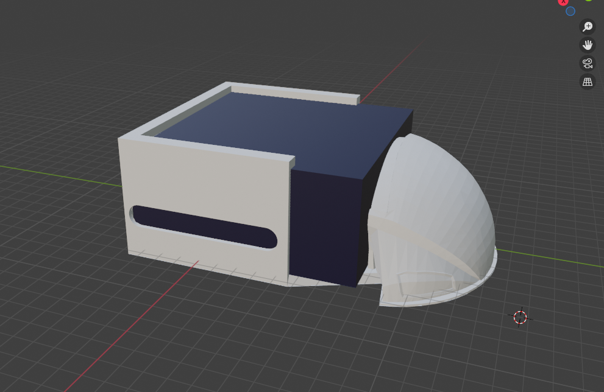 | 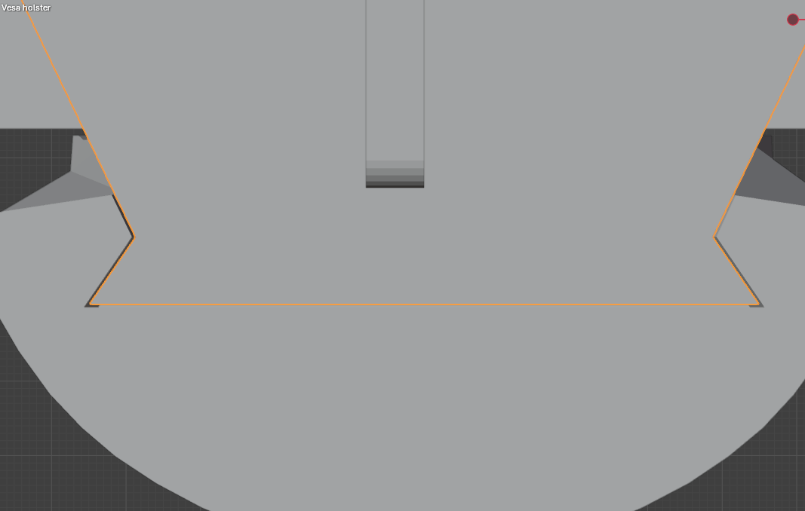 |
With a little bit of tweaking and 3D “modeling”, I ended up with a simple yet working way to attach the front bumper. It has to be easily removable, otherwise my NUC would be stuck in its plastic case forever. Once printed, unfortunately, willkalen’s NUC case was a little bit too small (even tough I measured it!). I had to remove the NUC’s bottom cover to make it fit, exposing the SSD. Foreshadowing? Who knows.
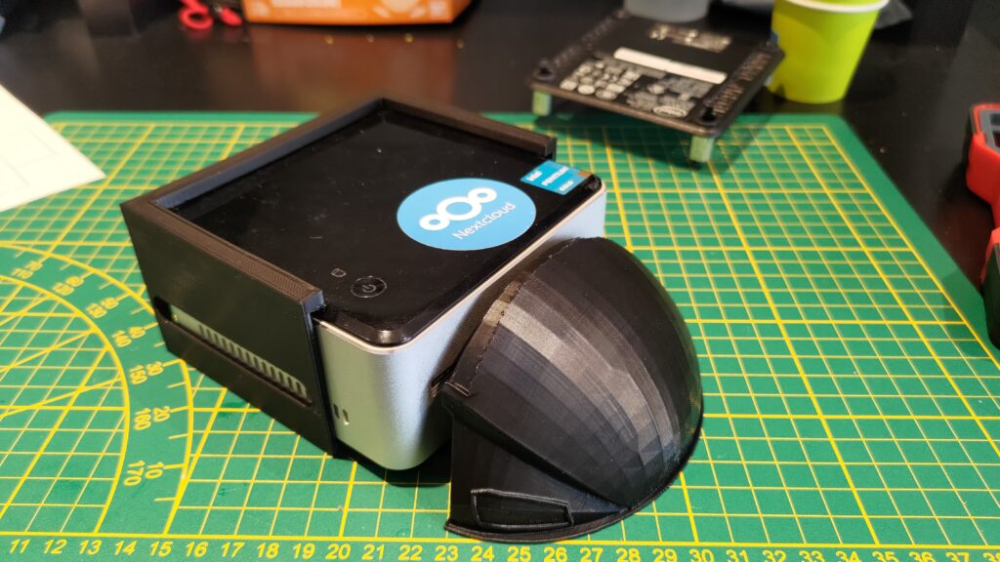After that, I roughly sketched what could be the wheels and I used yiixpe’s Kart spoiler piece, unedited. Using wood strips and glue, I added two support arms that will later be connected to the main chassis.
| 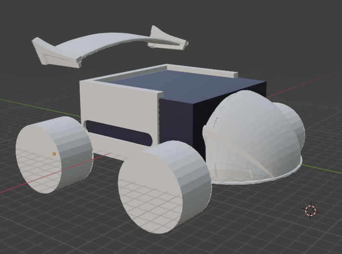 | 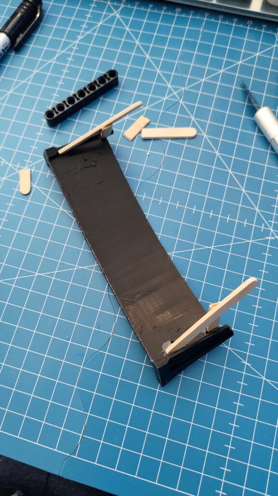 |
| 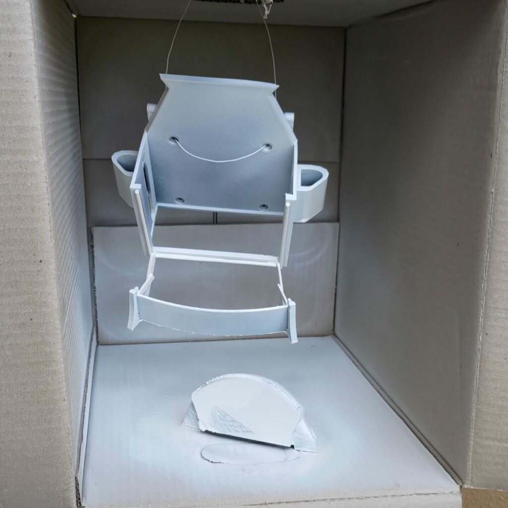 | 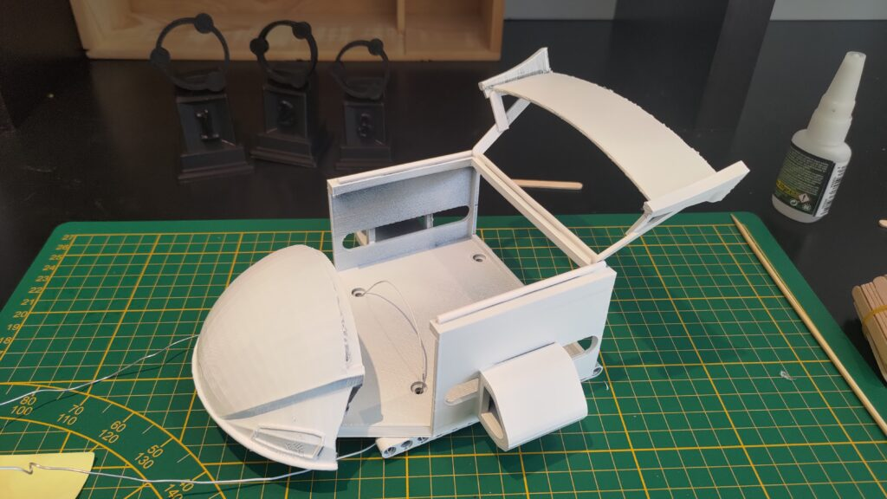 |
The wheels are from a LEGO set. The wheel itself is part 56908 Wheel 43.2mm D. x 26mm and the according Tire is 61480. I only had two and had to order online the two missing. I received the last one the last working day before the week event, I was very worried it wouldn’t arrive on time.
| 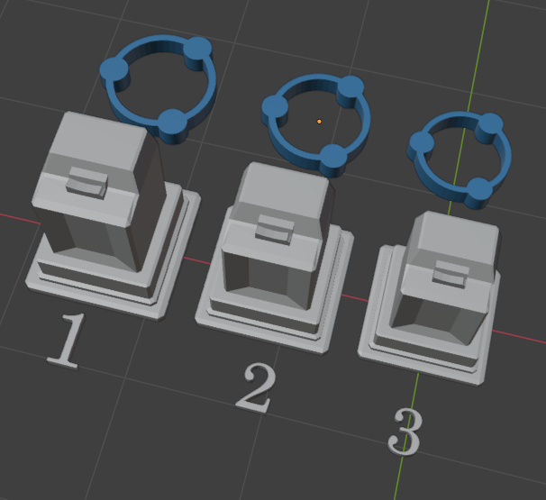 | 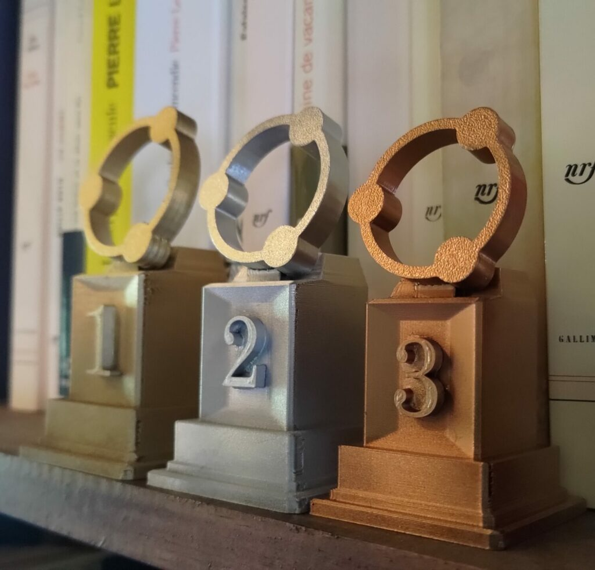 |
Now that the Kart and trophies were completes, I packed it all and started the hardest part: waiting to show it off to everyone.
Day minus 1
The tournament was supposed to happen on Tuesday. The day before, I had to give a talk regarding internal and technical stuff to my colleagues. I took advantage of this opportunity to unpack the kart and officially announce the tournament and prices.
A bit after my talk, I plugged the server to the network and power to test it out. Everything was working as expected. We then proceed to finish the day and gather ourselves in a restaurant.
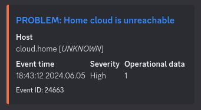Just before arriving at the restaurant, my phone vibrates to indicate me that my homelab cloud is unreachable. What a wonderful news. Neither my VPN nor my offsite bounce is working. Yet my monitoring is sending me alerts, so my flat hasn’t burned down and it still has internet connection. Weird. But not a life or death situation, I then proceed to the rest of the evening with my friends and colleagues.
Later that night, my two neurons connected: I realized that this NUC used to be my cloud in the time and must still have the crontab that tries to set my dynamic IP address to my domain through ddclient. That would explain why all services are still kinda working internally but unreachable through internet. But hey, I’m in the middle of the night and in my bed, that can wait until tomorrow.
The big karting day
Before everyone gets there, I went to the work room to remove the remaining crontab that messes up with my home cloud. Sitting at my desk, I tried to ssh into the server like I did the day before. Impossible. No ssh. No ping. Nothing. I scanned the local network with nmap, and the server is nowhere to be found. Intrigued, I plugged the adjacent TV screen to the server to debug it. What was my (unpleasant) surprise to find a ton of error messages regarding the ata interface. My partition (disk?) is in a really, really bad state.
My first plan of action was to boot on a USB stick and try to repair the partition. No luck.
I unplugged everything, disassembled the kart and noticed that the SSD wasn’t in its socket as far as possible. Could it have moved during the transport? During the day? Probably. I blew into the socket and into the disk like in a gameboy cartridge and plugged everything back. Unfortunately, the harm has been done and the server won’t boot past the initramfs cli.
At this point, people started working and were grieving over the server.
I then decided to reinstall everything. I booted on an Ubuntu server iso and started all over again. Fortunately, I had already started to write this blog post and all the software part was documented. All I had to do is copy/pasting. The server was back and running before midday, like if nothing ever happened.
The tournament
People were practicing against bots or in small groups when the clock struck. Time had come to stop being friendly and start playing for real.
The server was configured to to a 7 races run in Grand Prix mode. Config-wise, it’s two values to update in the server_config.xml file.
<!-- Game mode in server, [...] -->
<server-mode value="0" />
<!-- Number of grand prix tracks per game (If grand prix enabled). -->
<gp-track-count value="7" />
# And to allow more than 8 karts
<server-max-players value="16" />
Everything went very smoothly. The main pain point was not to disconnect between runs, otherwise we had to start from the beginning. How do I know it was enjoyed? LAN karting fun is inversely proportional to the number of insults heard. That’s for sure.
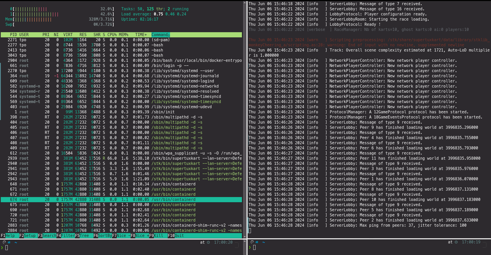I was surprised on how small the SuperTuxKart footprint is. The server holds a small Intel Celeron N2830, with 4G of RAM. As seen on the capture, we barely use any RAM, and CPU load was well under 50% for the entire Grand Prix. With 10 persons.
I finished second. Racing as hard and as fast as I could. Drifting, taking all the speed bonuses, avoiding every bananas and traps on my way. But nothing can be done against the boss who probably trained way more than any of us. On every race or so he managed to catch up with the last few karts from the previous round and kept his astonishing advance.
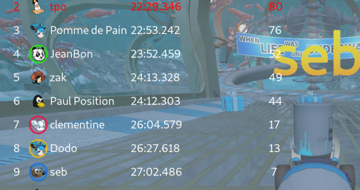Beauty shots
Beauty shots of the kart and the trophies. Thanks “Paul Position”!
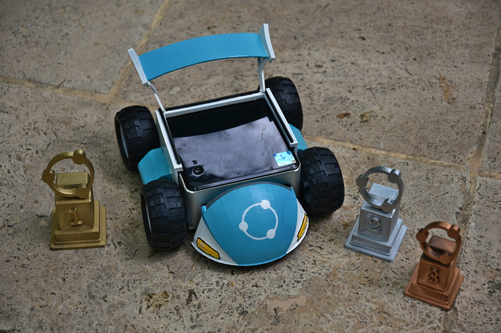 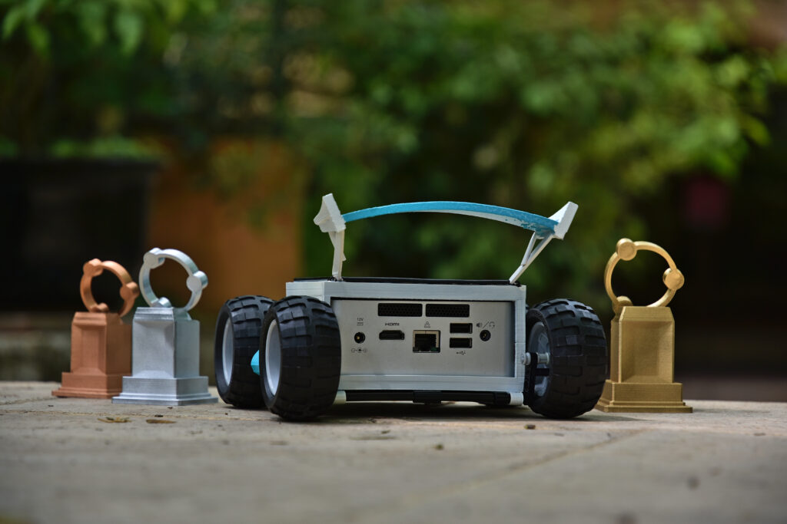 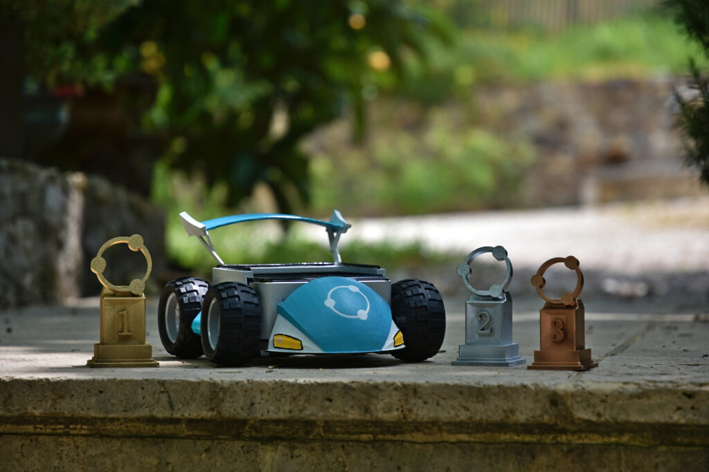